Uma seleção dos sites que desenhei e programei. Cada um parte do negócio e de quem o vai usar, não de um modelo pronto. Os marcados como conceito são propostas minhas para negócios reais.
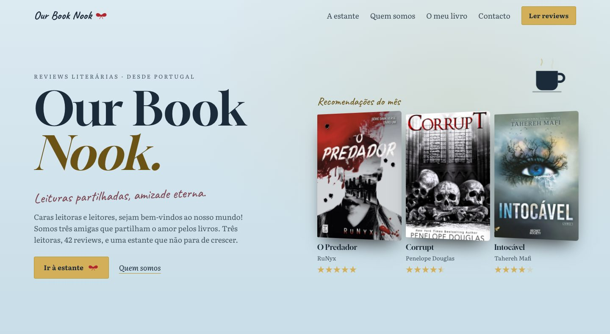
Blogue de reviews literárias
Blogue de três leitoras com 42 reviews. Cada review é uma lombada na estante: puxa-se para a abrir, com filtros por leitora e estrelas, pesquisa e um botão que escolhe o próximo livro.
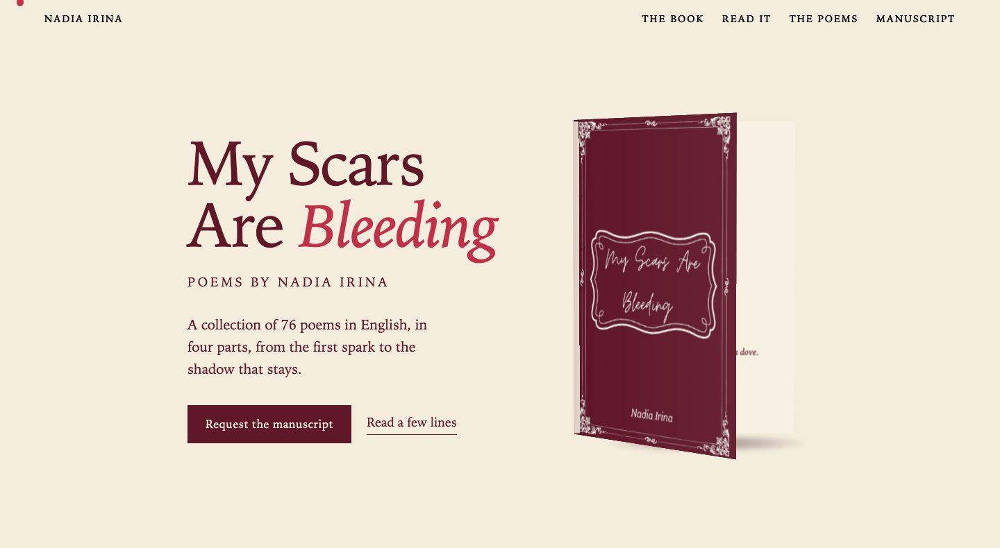
Site de autora · Projeto próprio
Site do meu livro de poemas, feito para editoras e agentes. Um livro em 3D roda, abre e folheia sozinho, as quatro partes abrem em separadores com excertos e títulos, e há um pedido do manuscrito por email.
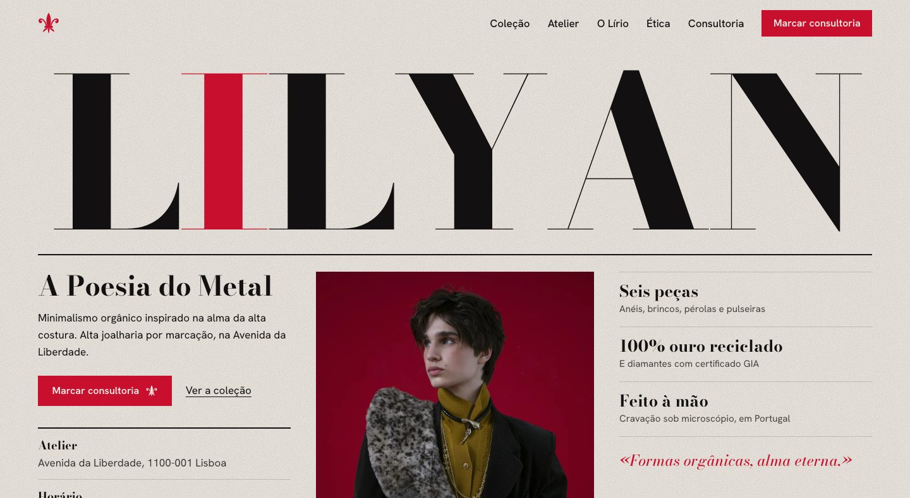
Alta joalharia · Projeto de conceito
Joalharia em Lisboa apresentada como uma casa de luxo: tipografia monumental, a coleção em seis peças, o atelier, o compromisso ético e um pedido de consultoria privada.
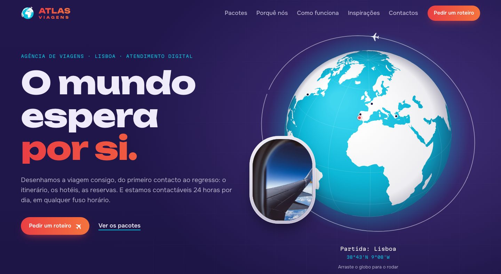
Agência de viagens · Projeto de conceito
Agência com atendimento digital: pacotes, inspirações por destino, as quatro etapas de uma viagem, perguntas frequentes e um formulário para planear a viagem.
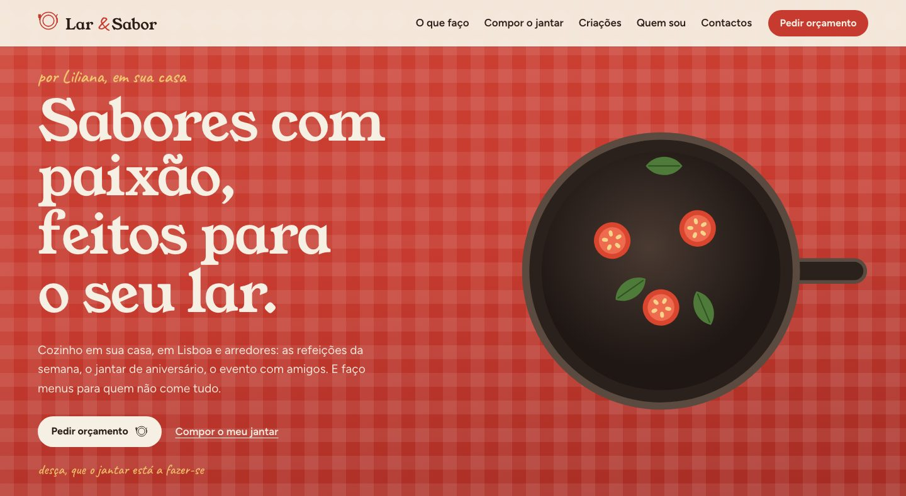
Chef ao domicílio · Projeto de conceito
Chef ao domicílio em Lisboa. O cliente compõe o seu jantar escolhendo os pratos, vê algumas criações e percebe como funciona o pedido.
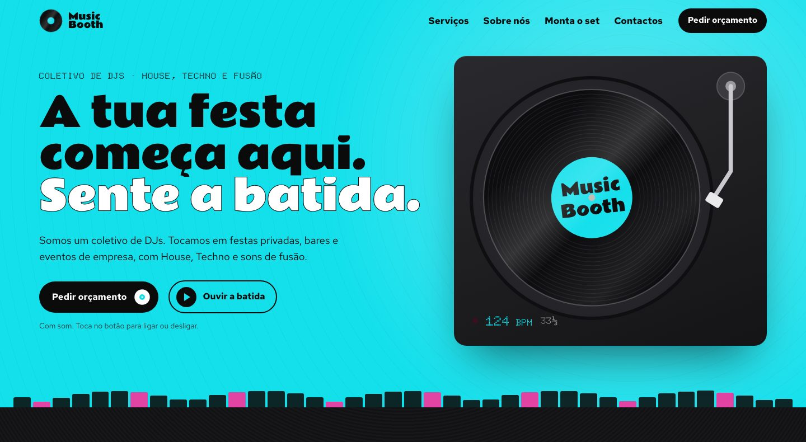
Coletivo de DJs · Projeto de conceito
Booking para festas, bares e eventos, com um configurador, «Monta o teu set», e pedido de orçamento.
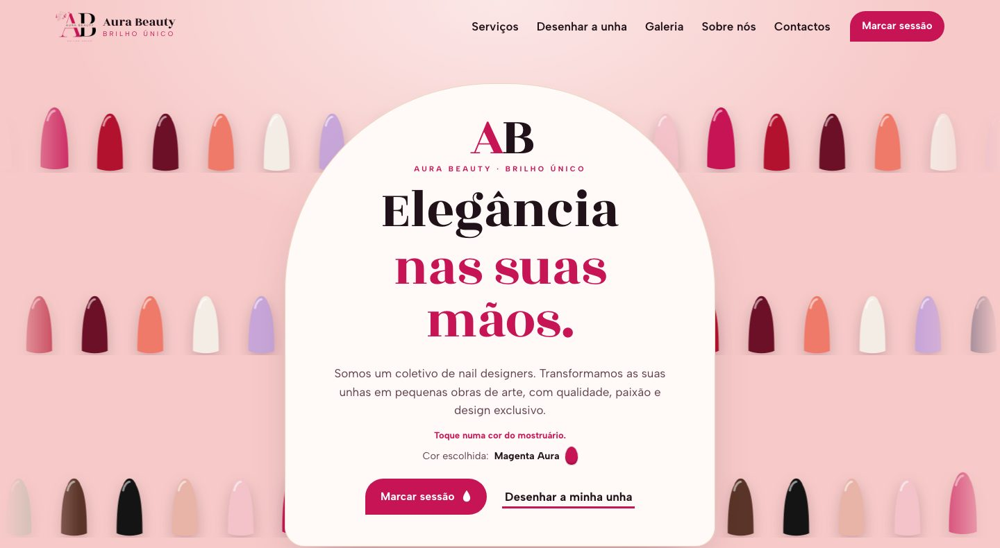
Nail designers · Projeto de conceito
Estúdio de unhas com um simulador, «Desenhe a sua unha», galeria de trabalhos, opiniões de clientes e marcação de sessão.
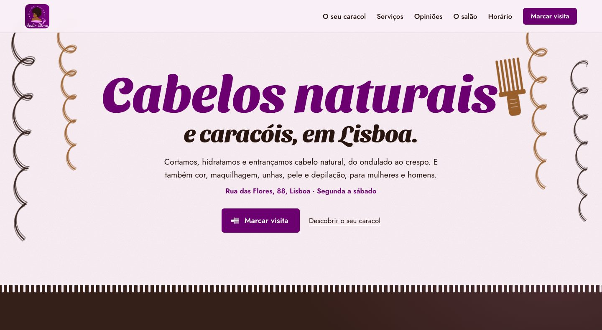
Salão de cabelos naturais · Projeto de conceito
Salão em Lisboa especializado em cabelo natural e caracóis. Um seletor, «Que caracol é o seu?», os serviços, opiniões e marcação de visita.
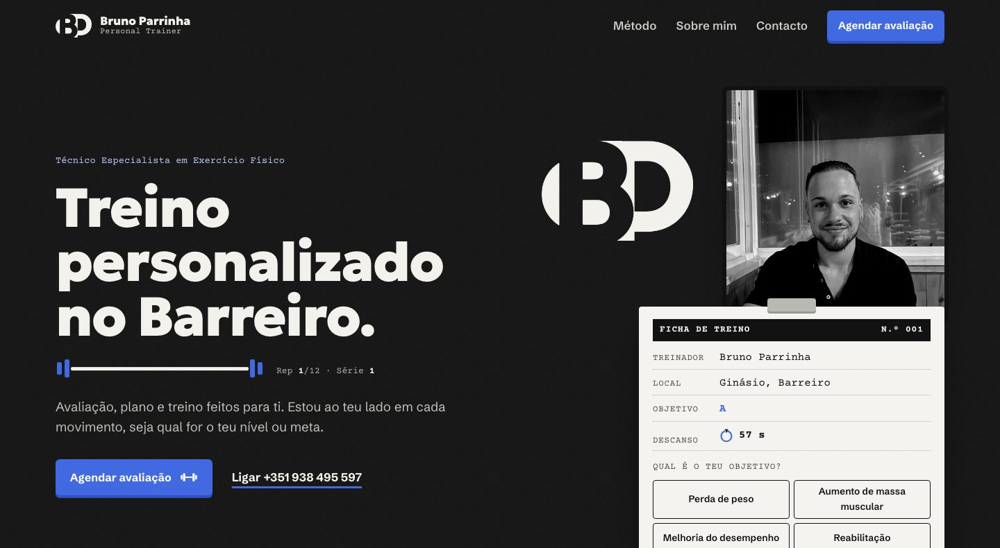
Personal trainer · Projeto de conceito
Personal trainer no Barreiro: o método em seis passos, a apresentação do treinador e a marcação de uma avaliação.
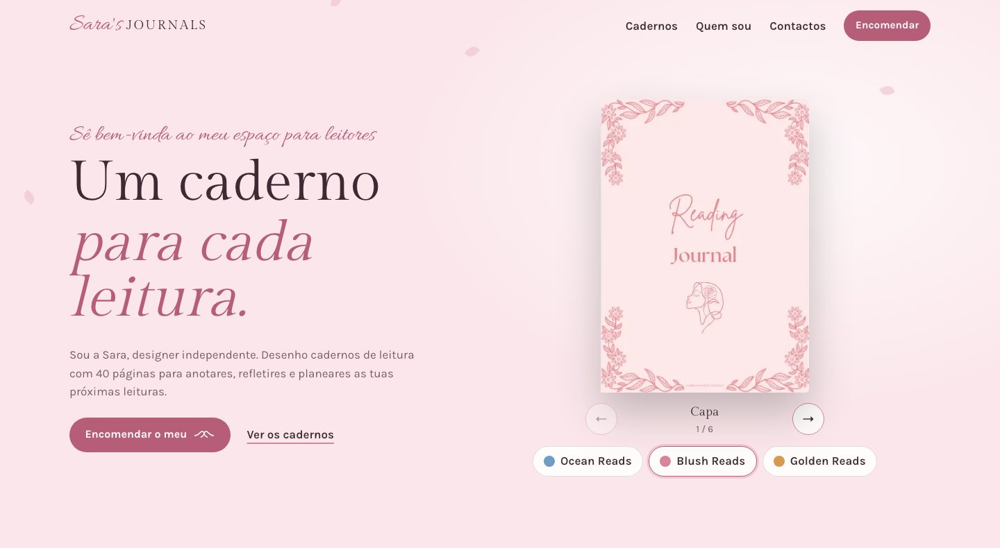
Cadernos de leitura · Projeto de conceito
Cadernos de leitura desenhados por uma designer independente: os cadernos disponíveis, quem os faz e uma página para encomendar.
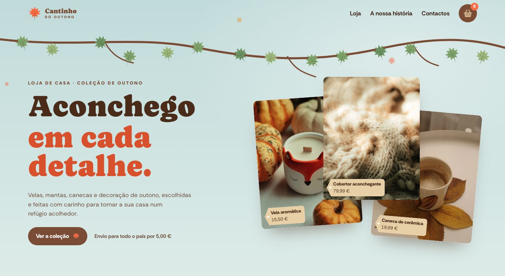
Loja de decoração · Projeto de conceito
Loja de casa para o outono, com a coleção da estação, a história da marca e um contacto direto, num ambiente quente e acolhedor.
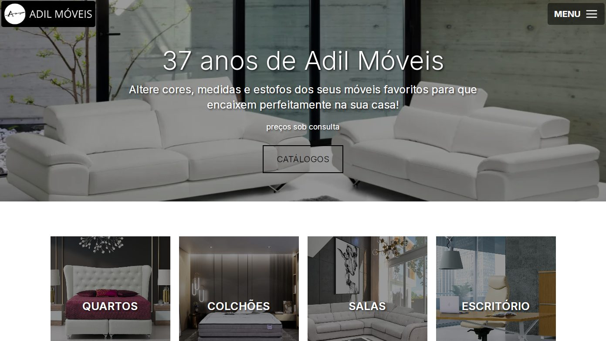
Loja de móveis · Website
Showroom digital para uma loja de móveis: navegação simples, filtros de produtos em JavaScript e galerias de imagens dinâmicas, a funcionar em computador e telemóvel.
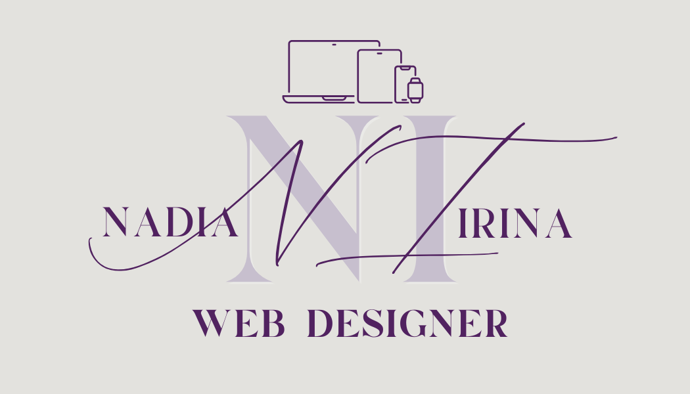
Branding · Canva
O meu cartão de visita, com paleta lavanda, tipografia elegante e um QR Code no verso que leva ao portfólio, junto com telemóvel, email e Instagram.
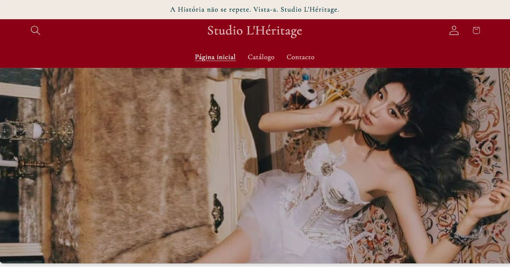
Loja online em Shopify · Captura de ecrã
Loja de vestuário vintage de alta-costura, com coleções narrativas e mood boards do Instagram. A loja já não está online, por isso fica aqui apenas a captura.
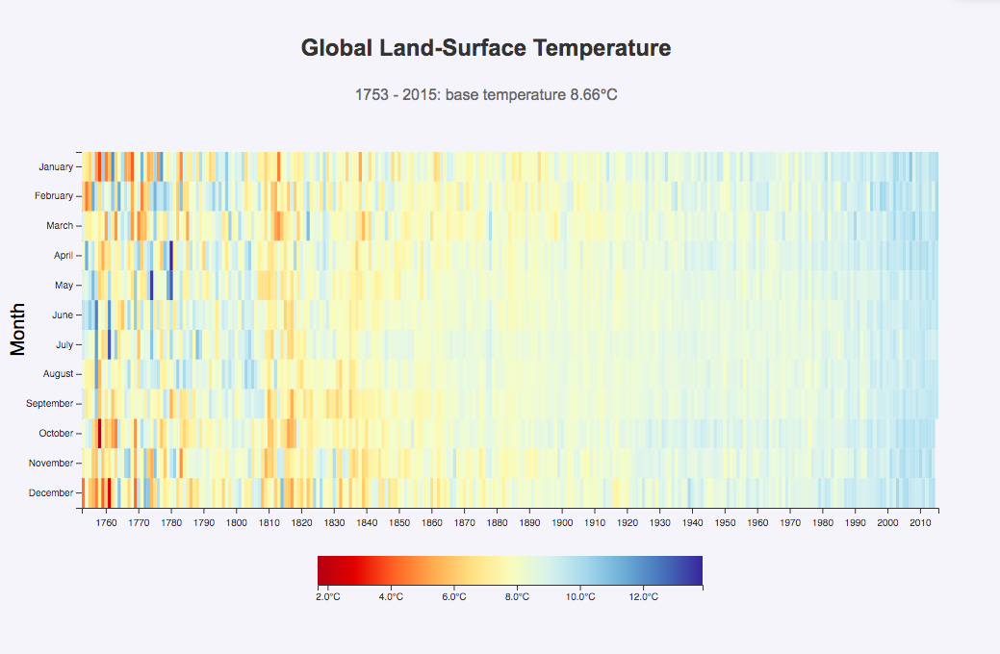
Visualização de dados · D3.js
Células coloridas e dicas ao passar o rato mostram como a temperatura global mudou ao longo do tempo.
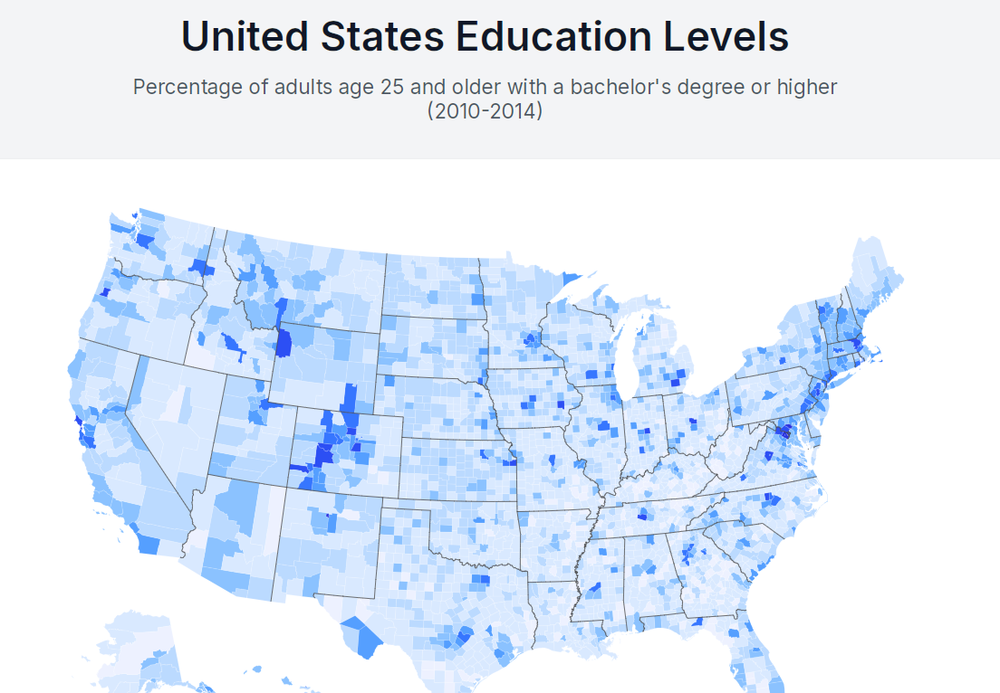
Visualização de dados · D3.js
Mapa interativo dos condados dos EUA com os níveis de educação, feito com D3.js e TopoJSON.
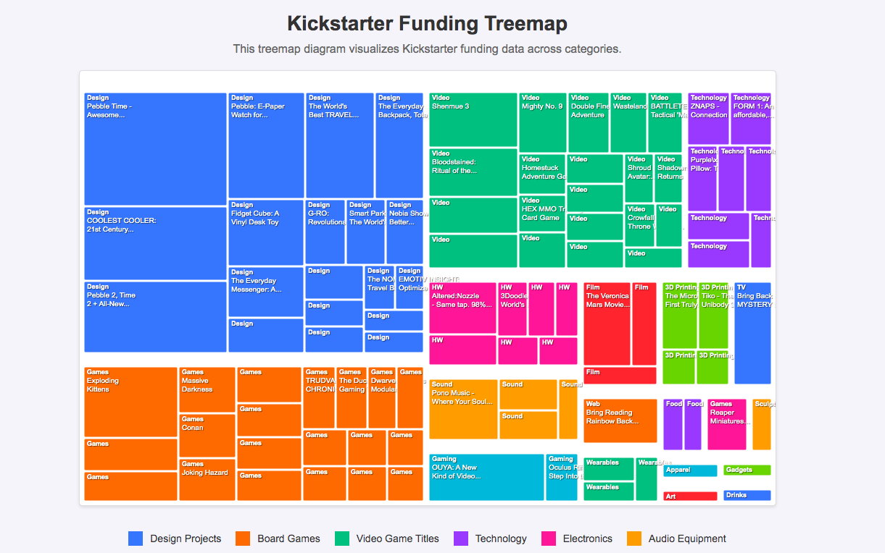
Visualização de dados · D3.js
Dados hierárquicos representados em proporção, com D3.js e CSS responsivo.
Procuras um Web Designer & Programador Front-End com visão de Marketing? Adoraria saber mais sobre o teu projeto!